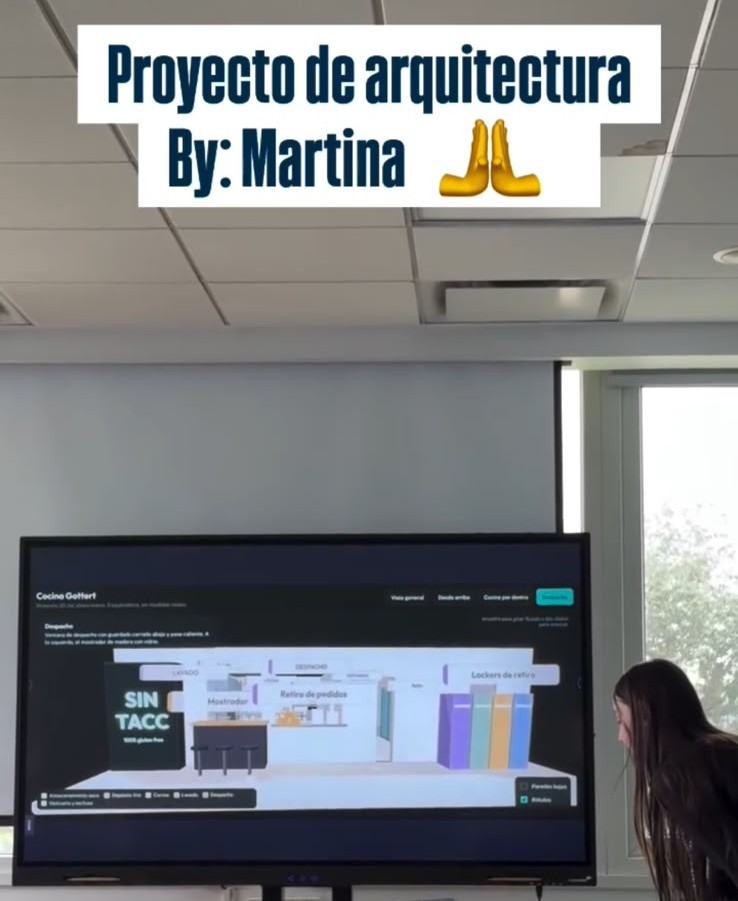

Otra de las habilidades que tengo es la comunicación asertiva y multimodal. Creo que puedo expresar mis ideas de diferentes maneras dependiendo de la situación y de la persona a la que me estoy dirigiendo. No siempre comunico algo de la misma forma, sino que intento adaptarme para que lo que quiero decir se entienda de la mejor manera posible. A lo largo del colegio tuve que hacer muchas presentaciones, trabajos escritos, videos y exposiciones, y en cada uno tuve que buscar una forma diferente de comunicar la información. Por ejemplo, en las presentaciones orales trato de explicar los temas con palabras que sean fáciles de entender y no simplemente repetir la información que investigué. También incluir imágenes, diseños o recursos visuales que ayuden a transmitir mejor la idea. Creo que esta habilidad es importante porque no alcanza con tener una buena idea, también hay que saber comunicarla. Siento que poder expresarme de diferentes maneras me ayuda tanto en los trabajos del colegio como en situaciones de la vida cotidiana.
Volver a las habilidades© 2026 - Mi Portfolio